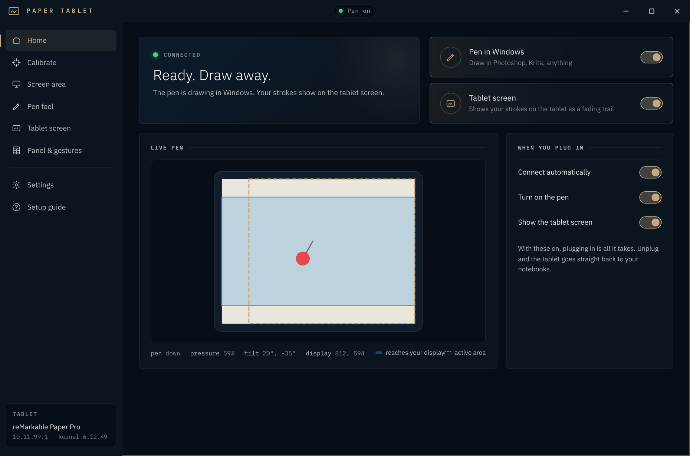
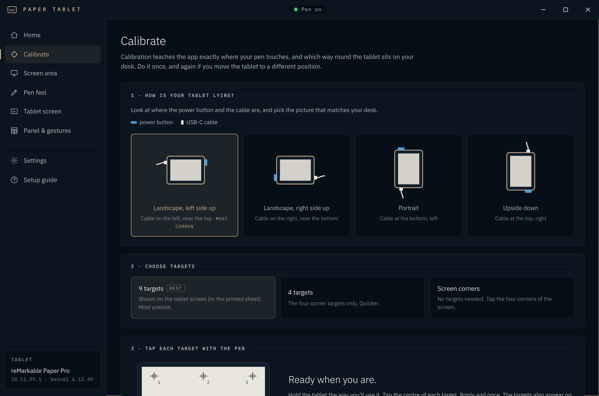
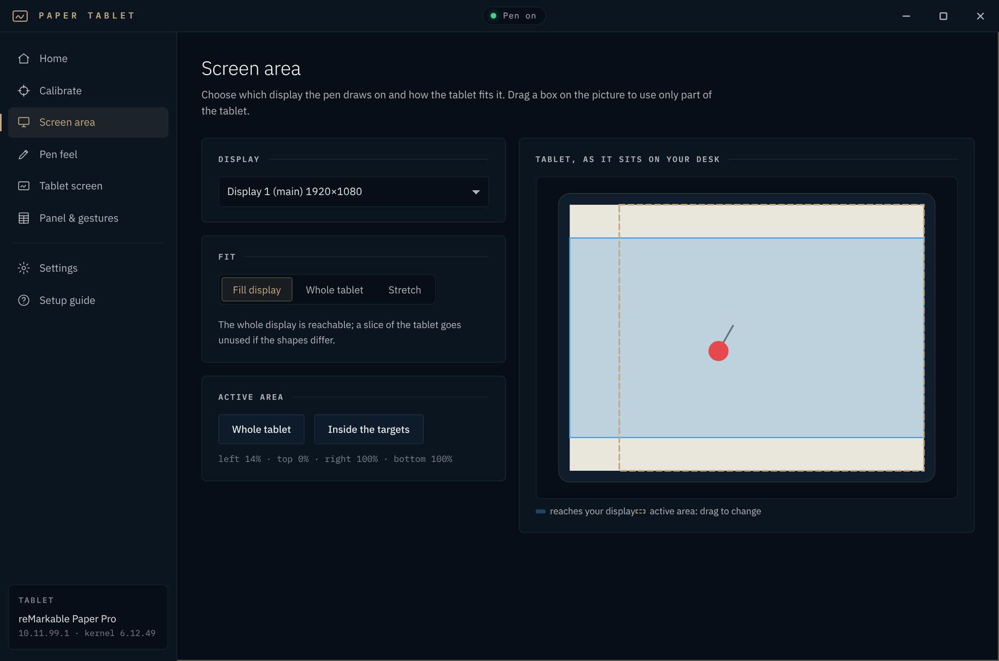
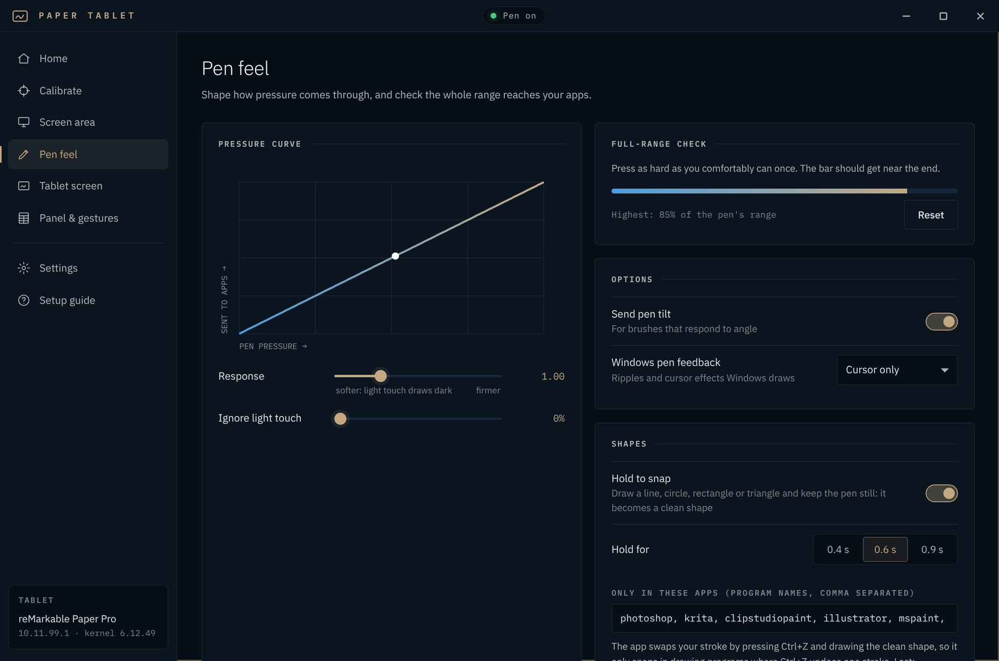
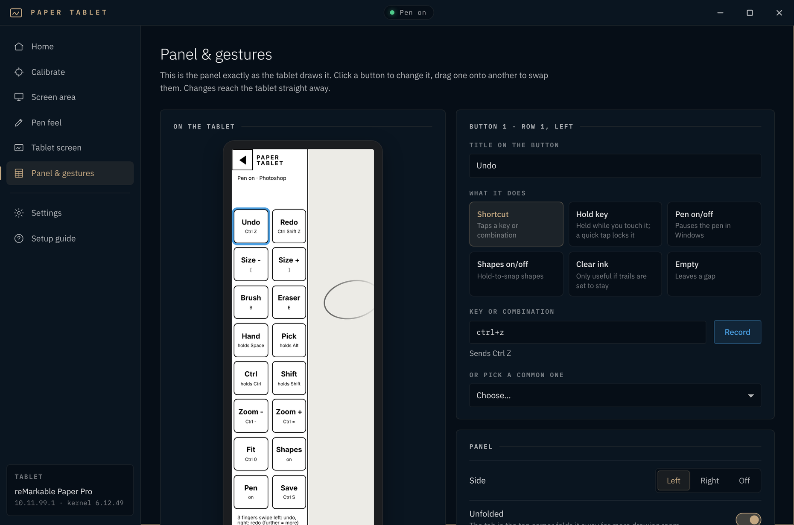
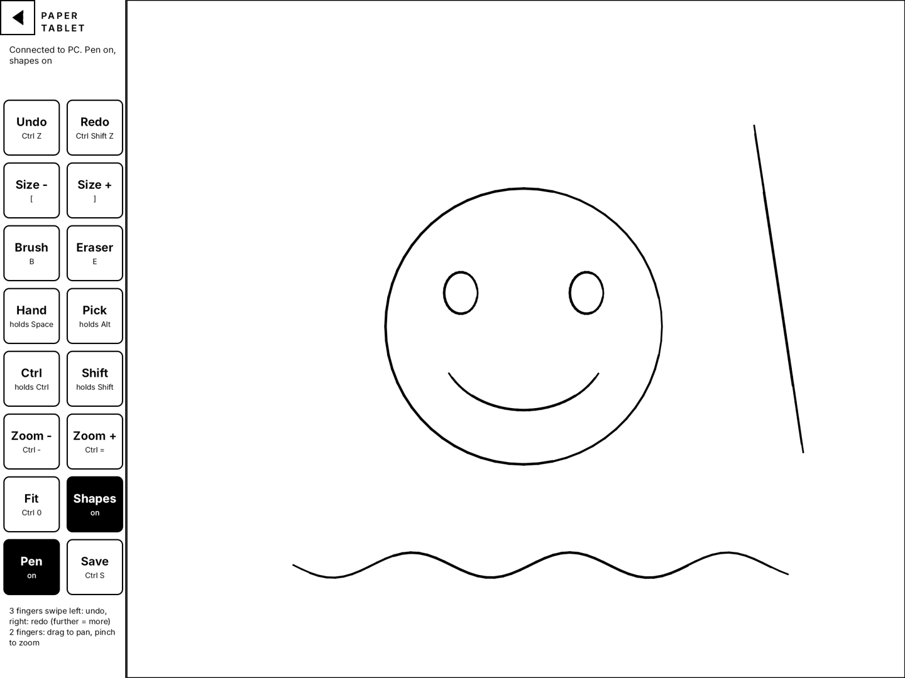

A real Windows pen
Windows Ink pen input, so apps see a pen, not a mouse. Pressure, tilt, hover and the eraser end, with no driver.
Plug a reMarkable Paper Pro into your PC with its USB cable and draw in Photoshop, Krita, Clip Studio or any Windows Ink app. Pressure, tilt, hover and the eraser end all arrive as a real Windows pen, and the tablet's own screen shows your strokes as you draw.
Windows 10 (1809+) or 11. No driver, no admin rights. Linux preview on the linux branch.
reMarkable 2 and 1 in beta.
These are live animations of the real behaviour, drawn in your browser. Screen recordings from the tablet will replace them.
Press harder and the line gets heavier, exactly as with a Wacom pen. The app passes every pen report on, with no frame-rate cap.
Pressure was confirmed in Photoshop on a Paper Pro with the Marker Plus.
In 0.9.0 and laterLean the pen and brushes that follow tilt change their angle. The cursor follows the pen in the air before it touches, so you see where you will land.
Photoshop needs a brush with Pen Tilt set as its angle control.
In 0.9.0 and laterDraw a line, circle, ellipse, triangle, rectangle or polygon, then hold the pen still for 0.6 s. It becomes a clean shape drawn with your stroke's own pressure, as in the tablet's notebooks.
It relies on Ctrl+Z removing exactly one stroke, which is why it is limited to known apps.
In 0.9.0 and laterA panel of 16 buttons on the tablet's edge, about 34 mm wide. You design each one in the desktop app: any title, any key combination.
The defaults follow Photoshop: Undo, Redo, brush size, Brush, Eraser, Hand, Pick, Ctrl, Shift, Zoom, Fit, Shapes, Pen, Save.
In 0.9.0 and laterSwipe three fingers left to undo and right to redo, one step for each stretch of the swipe, live as you go. Two fingers pan and pinch to zoom.
Short, Medium or Long swipe steps. Tap gestures can be given any keys.
Next releaseLoad any image as a greyscale mask. Black ignores the pen, white leaves it alone, and grey fades the pressure (mid grey gives half) or asks for a firmer press.
Built on the main branch and in hardware testing now; it ships in the next release.
Every feature here has been used on a real Paper Pro unless it says beta. Each card says where you can get it.
Windows Ink pen input, so apps see a pen, not a mouse. Pressure, tilt, hover and the eraser end, with no driver.
9, 4 or 0 targets. It learns where the pen lands and which way round the tablet sits on your desk.
Pick a display, choose fill, whole tablet or stretch, and drag out the part of the tablet you use. Next A stroke that runs off that part lifts instead of dragging along the edge.
A pressure curve, a light-touch threshold, a full-range check, and tilt on or off.
Lines, circles, ellipses, triangles, rectangles and polygons become clean shapes when you hold the pen still.
A greyscale stencil from any image: black ignores the pen, grey fades it. A library of named masks, Invert, and a corner tab on the tablet.
Plug in and the pen and tablet screen start. Unplug and the tablet is back in your notebooks within seconds. Nothing stays installed on it.
16 buttons you design, tapping or holding any keys. Next Named profiles, switched with arrows on the panel.
Your strokes show on the e-paper as a fading trail, so you draw on the tablet, not blind. Next Or keep them until you clear.
Lined, squared, dot, cross, blueprint or isometric paper, and a tracing image you move and zoom with your fingers.
On the Paper Pro, the front light goes to full while you trace and returns to your own level afterwards.
Fingers are ignored while the pen is near, and palm-sized contacts are ignored always. A touch stuck for 3 s is cleared.
Close to the tray and the pen keeps working. A resizable window in four themes: Paper Tablet, Graphite, Ledger and Intaglio.
A per-user installer with no admin rights, or a zip that runs from anywhere and keeps its settings beside it.
Pair once over the cable, then use the tablet over your network with the cable out. It only logs in to the tablet whose key it saw on the cable. Use trusted networks.
Built with reMarkable's official SDKs and started under emulation. Not yet run on a real rM2 or rM1: pen direction, tilt and palm sizes need one test session.
A virtual pen tablet through uinput, so it works on Wayland (Hyprland, Sway, GNOME, KDE) and X11. First build, not yet tested on a real Linux desktop.
An option per panel profile that sends your fingers to Windows as a touchscreen, for apps with their own touch scrolling and zoom.
The defaults follow Photoshop. Krita and Clip Studio use most of the same keys, and you can change any of them on the Panel & gestures page.
| Gesture | Does | Since |
|---|---|---|
| 3 fingers, swipe left / right | Undo / redo, live, one step per stretch of swipe | 0.9.0 |
| 2 fingers, drag | Pan (holds Space and drags) | 0.9.0 |
| 2 fingers, pinch | Zoom in / out (Ctrl+= / Ctrl+-) | 0.9.0 |
| 1 finger, triple tap | New layer by default, any keys you like | 0.9.0 |
| 5 fingers, twist | Rotate the canvas | Next |
| 5 fingers, double tap | Reset the canvas rotation (Krita: 5) | Next |
| 5 fingers, swipe down | Clear the tablet ink and refresh the whole e-paper screen | Next |
Screenshots from version 0.9.1, shown with sample data.






Released 28 October 2026. Free under the MIT licence. The builds are not code-signed yet, so Windows SmartScreen may warn the first time: choose More info, then Run anyway.
Installs for your user account with no admin rights. Start-menu entry, optional desktop shortcut, and an uninstaller that keeps your settings and calibration. Adds the WebView2 runtime if it is missing.
No installation. Unzip anywhere, even onto a USB stick, and run Paper Tablet. Settings, calibration, the app's key
and the log stay in the data folder beside it. Needs WebView2, which current Windows already has.
One setup script installs the window libraries, a private Python environment and a udev rule for the virtual pen. Log out and back in once afterwards. Not yet tested on a real Linux desktop.
git clone -b linux https://github.com/AmazingBodilyFluids/paper-tablet.git cd paper-tablet ./linux/setup.sh
All releases and their notes: GitHub Releases.
To run from source, clone the repo and double-click Paper Tablet.bat (Python 3.10+).
The setup guide opens by itself on first run and walks you through these steps.
Turning on developer mode resets a Paper Pro. Sync to the cloud or export first.
It is reMarkable's own feature. Read their guide, then plug the tablet into the PC.
Type the tablet's password once. The app uses it to install its own key and never stores it.
Say how the tablet lies on your desk and tap the targets. After that, plugging in is all it takes.
/tmp, which clears on every reboot.From the project's releases and commit history on GitHub.